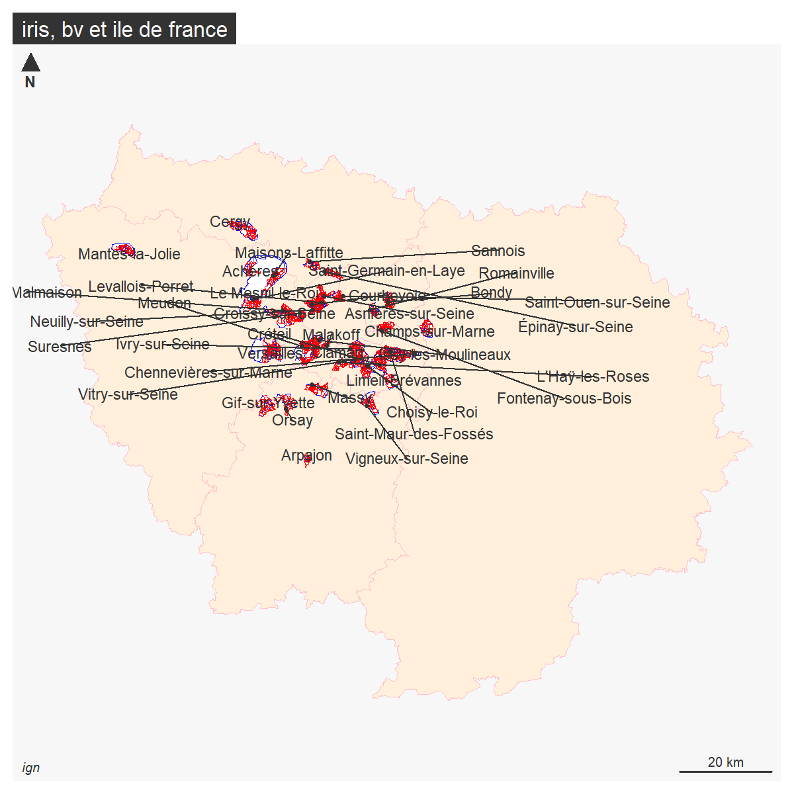

Préparation des données
1 Objectif
Pour l’examen (y compris celui de rattrapage), on extrait pour chaque ville choisie par les étudiants :
les données foncières à la parcelle
l’enquête filosofi au carreau
le recensement à l’iris
le rpls à l’appartement
Ces 4 sources seront utilisées pour le devoir maison, afin de permettre à l’étudiant de choisir.
Ces 4 sources seront agrégées au bureau de vote via les centroides pour l’élection de 2022 (on dispose des bureaux uniquement pour cette élection)
1.1 Démarche
5 étapes
on définit le nombre de communes concernées
extractions pour les fichiers spatiaux et les fichiers texte (diminuer la taille des fichiers)
intersection bv et centroides fichiers spatiaux
jointure attributaire centroide, fichers de données
agrégation des données au bv
2 cog
Définition de la liste des villes de base.
Des pb seront à traiter : Pointe à Pitre, Lyon, Marseille
Chaque étudiant a choisi une ville pour ses données. Ces villes sont choisies au cours2, jusqu’au cours 9 pour les modifications
Rochefort est rajouté à la main
2.1 Constitution de la liste
à partir de la feuille d’émargement
# recup fichier ville
ville <- read.csv("data/cours2.csv", colClasses = "character")
ville <- ville [,3]
villeModif <- read.csv("data/cours3.csv", colClasses = "character")
ville <- c(ville, villeModif [,4])
# recup dernier cours
villeModif <- read.csv("data/cours9.csv", colClasses = "character")
# rajout Rochefort
ville <- c(ville, 17299)
ville <- c(ville, villeModif [,4])
# 78 villes différentes
ville <- unique(na.omit(ville))
# recodage pour le zéro
nb <- nchar(ville)
df <- data.frame(cbind(ville, nb))
df$ville [df$nb == 4 ]<- paste0("0", df$ville [df$nb == 4 ] )
df$nb <- nchar(df$ville)
table(df$nb)
df [(df$nb != 5),]
df <- df [!(df$nb != 5),]
# liste des villes utilisées avec code à 5 chiffres = 73Les étudiants ont choisi 73 code insee.
2.2 Jointure
fr <- st_read("data/gros/COMMUNE_CARTO.shp")
# le code INSEE a 5 chiffres y compris le zéro
names(df)
names(fr)
joint <- merge(fr, df, by.x = "INSEE_COM", by.y= "ville")
# la jointure est de 68
# pb sur 5 code insee qui doivent etre des cp
cp <- setdiff(df$ville, joint$INSEE_COM)retrouver les code insee à partir des cp pour ces 5 communes utilisation de l’api
library(httr)
library(jsonlite)
equiv <- NULL
for (i in cp){
rqt <- paste0("https://geo.api.gouv.fr/communes?codePostal=",i)
res <- httr::GET(rqt)
# dans res, on remarque le status à 200, c'est ok. et le format json
tmp <- fromJSON(rawToChar(res$content))
equiv <- rbind(equiv, tmp)
}
str(equiv)
# bizarrement le cp est en liste donc on remet en vecteur et on fait un tab
# histoire de repérer les doublons cp
equiv$codesPostaux <- unlist(equiv$codesPostaux)
table(equiv$codesPostaux)
equiv <- equiv [, c("code", "nom")]
df <- rbind(df, data.frame(ville=equiv$code, nb = 5))79 villes = 73 + 5 code insee liés à des cp
72 villes récupérées, il y avait des doublons.
quelques tests
sur quelques villes
Pb Lyon et Marseille / uniquement les arrondissements 1
joint$INSEE_COM [joint$INSEE_COM == "13055"] <- "13201"
joint$INSEE_COM [joint$INSEE_COM == "69123"] <- "69381"
joint [joint$INSEE_COM == "69381",]premier enregistrement
2.3 Cartographie (sans Pointe à Pitre)
fond <- st_read("data/gros/DEPARTEMENT.shp")
png("img/communes.png")
mf_init(cogGEOM)
mf_map(fond, add = T, col = "antiquewhite1", border = "wheat")
mf_map(cogGEOM, col = "red", border = NA,add = T)
mf_layout("Communes choisies par les étudiants (sf Pointe à Pitre (Guadeloupe))", credits = "IGN")
dev.off()
Des choix sur toute l’étendue du territoire de la métropole
3 Extraction des données
3.1 Données spatiales
3.1.1 bv
bv <- st_read("data/gros/bureau-de-vote-insee-reu-openstreetmap.gpkg")
bv <- bv [, c("insee", "nom", "bureau")]
bv <- st_transform(bv, 2154)
bvSel <- bv [bv$insee %in% cog$INSEE_COM,]
length(unique(bvSel$insee))
manquants <- setdiff(cog$INSEE_COM, bv$insee)pb Marseille 1er
les codes insee sont les codes des villes (le code arr est sur le champs bureau)
pb <- bv [bv$insee %in% c('13055', '69123'),]
pb$insee <- substring(pb$bureau, 1,5)
pb <- pb [pb$insee %in% c('13201','69381'),]
pb$bureau2 <- substring(pb$bureau, 7,9)
pbMarseille <- pb [pb$nom == 'Marseille',]
tab <- table(pbMarseille$bureau2)
length(names(tab))
bureauxMarseille <- names(tab)
# 18 bureaux ms pas nom se suivant
pbLyon <- pb [pb$nom == 'Lyon',]
# 16 bureaux Lyon 101 117
table(pbLyon$bureau2)
pb <- pb [, -5]
bvSel <- rbind(bvSel, pb)Ville à un seul bv : uniquement Drom
tab <- sort(table (bv$insee))
hist(tab, main = "Distribution du nombre de bureaux", xlab = "nb de bureaux",
ylab = "nb de villes")enregistrement
3.1.2 Iris
names(iris)
irisSel <- iris [iris$INSEE_COM %in% cog$INSEE_COM,]
length(unique(irisSel$INSEE_COM))
manquants <- setdiff(cog$INSEE_COM, irisSel$INSEE_COM)
cog$NOM_COM_M [cog$INSEE_COM %in% manquants]rajout Pointe à pitre
pb projection….on garde à part
iris <- st_read("data/gros/IRIS-GE_3-0_SHP_RGAF09UTM20_GLP-ED2023-01-01/")
irisSelPAP <- iris [iris$NOM_COM == 'Pointe-à-Pitre',]enregistrement
3.1.3 Carreaux Filosofi
car <- st_read("data/gros/carreaux_200m_met.gpkg")
# extraction du premier code insee du carreau + la quote pour pb zero
car$cog <- paste0(substring(car$lcog_geo,1,5))
carSel <- car [car$cog %in% cog$INSEE_COM,]
length(unique(carSel$cog))toujours 71, manque pointe à pitre
Pas de filosofi à la Guadeloupe - moindre qualité des sources.
Bondy
bondy <- carSel [carSel$lcog_geo == '93010',]
plot(bondy$men_pauv, bondy$men_mais)
hist(bondy$men_pauv)
str(bondy)
mf_map(bondy, type = "choro", var = "men_pauv" )Enregistrement des carreaux par dpt
16 M carreaux
3.2 Données texte
3.2.1 résultats des élections 2022
cog <- read.csv("data/cog.csv", fileEncoding = "UTF-8", colClasses = "character")
# jointure ville code insee pour les résultats
election2022 <- read.csv("data/gros/resultats-par-niveau-burvot-t1-france-entiere.csv", fileEncoding = "UTF-8", header = T, colClasses = "character")
names(election2022)
str(election2022$Code.de.la.commune)
# INSEE_COM code insee
election2022$INSEE_COM<-paste0(election2022$Code.du.département,election2022$Code.de.la.commune)
# Pb pointe à pitre
election2022[grep("Pointe-à-Pitre", election2022$Libellé.de.la.commune),]
# le code dpt est ZA120 on le remplace par le cog officiel
election2022$INSEE_COM[election2022$INSEE_COM =="ZA120"] <- 97120
# jointure
joint <- merge(cog, election2022, by = "INSEE_COM")
length(unique(joint$INSEE_COM))
# 72 youpi au cas où ce n'est pas le cas :
pb <- setdiff(cog$INSEE_COM, joint$INSEE_COM)
cog[cog$INSEE_COM %in% pb ,]Même pb qu’avec les bv
syntaxe : num bureau
combien de bv dans le fichier bv ? 17 et 18
pb <- election2022 [election2022$INSEE_COM %in% c('13055', '69123'),]
write.csv(pb, "data/pb.csv", fileEncoding = "UTF-8", row.names = F, quote=TRUE)
lyon <- pb [pb$Libellé.de.la.commune == 'Lyon',]
lyon <- lyon [lyon$Code.du.b.vote %in% c(101:117),]
lyon$Code.de.la.commune <- '69381'
mars <- pb [pb$Libellé.de.la.commune == 'Marseille',]
mars$Code.du.b.vote
mars <- mars [mars$Code.du.b.vote %in% bureauxMarseille,]
mars$Code.de.la.commune <- '13201'
election2022 <- rbind(election2022, lyon, mars)remplacer les en têtes par les noms, on extrait les candidats
le remplacement se fera en fonction des colonnes choisies % ou inscrits ou sexe etc…
3.2.2 Valeurs foncières
cog <- read.csv("data/cog.csv", colClasses = "character", fileEncoding = "UTF-8")
vf <- read.csv("data/gros/valeursfoncieres-2022.txt", sep ="|", dec = ",", fileEncoding = "UTF-8")attention gros fichier
code INSEE
pb des zéros, un import en txt n’a pas réglé la question.
names(vf)
vf$lg <- sapply(vf$Code.commune, nchar)
vf$dpt <- sapply(vf$Code.departement, nchar)
table(vf$dpt)
table(vf$Code.departement [vf$dpt == "3"])
# on supprime les sf pointe à pitre
vf[grep("POINTE A PITRE", vf$Commune),]
vf$dpt[grep("POINTE A PITRE", vf$Commune)] <- 2
vf<- vf [vf$dpt < 3, ]
table(vf$lg, useNA = "always")
# pour le code commune on rajoute deux zéros et on coupe
vf$com <- paste0('00', vf$Code.commune)
table(sapply(vf$com, nchar))
right = function (string, char) {
substr(string,nchar(string)-(char-1),nchar(string))
}
vf$comF <- right(vf$com, 3)
table(sapply(vf$comF, nchar))
# cas pointe à pitre
vf$cog <- paste0(vf$Code.departement, vf$comF)
table(sapply(vf$cog, nchar))
vf$cog [nchar(vf$cog)==6] <- "97120"extraction des 72 communes
71 communes
Thionville pas de valeur foncière
test bondy
bondy <- vfSel [vfSel$cog == "'93010",]
tab <- table(bondy$Valeur.fonciere)
hist(bondy$Valeur.fonciere)
table(bondy$Voie [bondy$Valeur.fonciere > 30000000])
barplot(table(bondy$Voie [bondy$Valeur.fonciere < 3000]), las = 2)on enregistre par dpt
3.2.3 Base logement (IRIS)
lgt <- read.csv2("data/gros/base-ic-logement-2019.CSV", dec = ".")
lgt <- lgt [lgt$COM %in% cog$INSEE_COM,]
unique(lgt$COM)72 communes
test Bondy
enregistrement
write.csv(lgt, "data/gros/lgt.csv", fileEncoding = "UTF-8", quote = T)
valDpt <- unique(vfSel$Code.departement)
lgtSel$dpt <- substring(lgtSel$COM,1,2)
for (i in valDpt){
sel <- lgtSel [lgtSel$dpt == i,]
write.csv2(sel [, c(48,1:43)], paste0("data/examen/lgt/", i, "_lgtEXAMEN.csv"), fileEncoding = "UTF-8")
}3.3 RPLS
Le RPLS est en point appartement, on l’agrège en pt immeuble
Le RPLS est par région et par dpt en idf
fic <- list.files("data/gros/RPLS")
regFic <- substring(fic, 28,29)
refRPLS <- data.frame(reg = regFic, fic = fic)
refRPLS
# equiv code insee et region
ref <- read.csv("data/gros/table-appartenance-geo-communes-23.csv", fileEncoding = "UTF-8")
cog <- read.csv("data/cog.csv", fileEncoding = "UTF-8")
cog$INSEE_COM <- substring(cog$INSEE_COM_TXT, 2, 6)
joint <- merge(cog, ref [, c("CODGEO", "REG", "DEP")], by.x = "INSEE_COM", by.y = "CODGEO")
reg <-names(table(joint$REG))
# 12 régions sur 19
r <- reg [1]
reg <- reg [-c(1:3)]
rpls <- NULL
for (r in reg){
refFIC <- refRPLS$fic [refRPLS$reg == r]
print(r)
fic <- read.csv2(paste0("data/gros/RPLS/", refFIC), header = T, quote = "")
commune <- joint$INSEE_COM [joint$REG == r]
for (c in commune){
tmp <- fic [fic$DEPCOM == c,]
rpls <- rbind (rpls, tmp)
}
}
write.csv(rpls, "data/gros/rpls.csv")
head(rpls)4 Intersection par bureaux de vote
On a déjà les bv et les carreaux
st_layers("data/geo.gpkg")
bv <- st_read("data/geo.gpkg", "bv")
car <- st_read("data/geo.gpkg", "car")
iris <- st_read("data/geo.gpkg", "iris")
irisPAP <- st_read("data/geo.gpkg", "irisPAP")4.1 Nettoyage du bv
Le bv pas valide pour les intersection
bv <- bv [st_is_valid(bv),]
bv <- st_cast(bv, "POLYGON")
# Du coup, pl polygone pour un bureau on supprime les petits poly
bv$aire <- st_area(bv)/10000
library(units)
bv$aire <- drop_units(bv$aire)
bv <- bv [bv$aire > 5,]2113 au départ 2098, puis 2096 à la fin
4.2 vf / parcelle : intégration du cadastre
C’est en fait l’intersection bv et cadastre
On récupère le cadastre, on intersecte parcelle et bv et on enregistre le fichier dans bv.gpkg avec le code insee.
4.2.2 traitement
Le cadastre est téléchargé par commune (etalab), dézippé et intersecté. L’extraction va dans le bv.gpkg, une couche par commune
dpt <- substring(cog$INSEE_COM,1,2)
code <- substring(cog$INSEE_COM,1,6)
# en cas de sous boucle. pour diminuer les communes concernés
dpt <- dpt [1:6]
code <- code [1:6]
i <-1
dpt <- "01"
code <- "01150"
nomZIP <- "cadastre-97120-parcelles.json.gz"
##### NE PAS JOUER
for (i in 1:length(dpt)){
nomZIP <- paste0(dpt [i], "_", code [i],".gz")
nomGEO <- paste0(dpt [i], "_", code [i],".geojson")
print(paste0(i, "_",nomZIP))
# pour éviter de télécharger pl fois test
if (file.exists(nomZIP)==FALSE ){
fic <- download.file(paste0("https://cadastre.data.gouv.fr/data/etalab-cadastre/2023-07-01/geojson/communes/", dpt [i],"/",code [i],"/cadastre-", code [i],"-parcelles.json.gz"), nomZIP)
}
exdir <- paste0("data/gros/cadastre/",nomGEO)
# gunzip pour des gz
gunzip(nomZIP, exdir, overwrite = T )
cadastre <- st_read(paste0("data/gros/cadastre/",nomGEO))
# 2154 obligatoire pour intersecter
cadastre <- st_transform(cadastre,2154)
# extraction bv
bvSel <- bv [bv$insee == code [i],]
# intersection avec bv
inter <- st_intersection(bvSel [, c("bureau")], st_centroid( cadastre [, c("section", "numero")]))
st_write(inter, "data/gros/bv.gpkg", paste0("bv_",code [i]), delete_layer = T)
}4.2.4 Union
lireGPKG <- function(numCouche){
fic <- st_layers("data/gros/bv.gpkg")
couche <- fic$name
cadastre <- st_read("data/gros/bv.gpkg", couche [numCouche])
cadastre$INSEE_COM <- substring(couche [numCouche], 4, 8)
st_write(cadastre, "data/geoInter.gpkg", "cadastre", append = T )
}
couche <- c(1:72)
lapply(couche, lireGPKG)4.3 lgt / iris : prorata
Croisement iris / bv
4.3.1 Carto repère sur l’Ile de France
Histoire de repérer quelques communes test
png("img/idF.png", height = 1200, width = 1200, res = 200)
fond <- st_transform(fond, 2154)
fond <- fond [fond$INSEE_REG == 11,]
mf_map(fond, col = "antiquewhite1", border = "pink")
mf_map(iris, col= "white", border = "blue", add = T)
mf_map(bv, border = "red", col = NA, add = T)
etik <- bv [!duplicated(bv$insee),]
mf_label(etik, var = "nom",overlap = F )
mf_layout("iris, bv et ile de france", "ign")
dev.off()
4.3.2 Traitement
Les iris sont plus gros que les bureaux de vote, donc on prend les centroides des bureaux de vote.
Puis on divise par l’iris par le prorata du bv / aire de l’iris
code <- cog$INSEE_COM
for (c in code){
print(c)
interSel <- inter [inter$INSEE_COM == c,]
irisSel <- unique (interSel$CODE_IRIS)
for (i in irisSel){
aireIris <- st_area(iris$geom [iris$CODE_IRIS == i])/10000
inter$prorata [inter$INSEE_COM == c & inter$CODE_IRIS == i] <- inter$aire [inter$INSEE_COM == c & inter$CODE_IRIS == i] / sum(inter$aire [inter$INSEE_COM == c & inter$CODE_IRIS == i])
inter$prorataIris [inter$INSEE_COM == c & inter$CODE_IRIS == i] <- aireIris * inter$prorata [inter$INSEE_COM == c & inter$CODE_IRIS == i]
}
}4.3.3 Quelques verif
Bondy
# verif sur Bondy
c <-93010
interSel
i <-irisSel [1]
table(inter$CODE_IRIS [inter$NOM_COM == 'Bondy'])
inter [inter$INSEE_COM == '93010'& inter$CODE_IRIS == '930100202' ,]
st_area(iris$geom [iris$CODE_IRIS == '930100202'])/10000
17*0.42
# le prorata est le rapport entre surface par rapport à la surface totale
# le prorata iris est la verif sur la surface.
# verif sur pointe à pitre... il n'y a pas d'iris pap normalement
inter [inter$INSEE_COM == '97120',]
tail(inter)Autre cas d’école Arpajon et Miribel
bvSel <- bv [bv$nom == "Arpajon",]
interSel <- inter [inter$NOM_COM == 'Arpajon',]
mf_map(bvSel, "typo", var = "bureau")
mf_map(iris, col = NA, lwd = 2, border = "red", add = T)
mf_label(interSel, var = "prorata", col = "red")
mf_layout("Arpajon : Prorata bv sur aire Iris...", "ign et calculs fous")bvSel <- bv [bv$nom == "Miribel",]
interSel <- inter [inter$NOM_COM == 'Miribel',]
mf_map(bvSel, "typo", var = "bureau")
mf_map(iris, col = NA, lwd = 2, border = "red", add = T)
mf_label(interSel, var = "prorata", col = "red")
mf_layout("Miribel : Prorata bv sur aire Iris...", "ign et calculs fous")5 Jointure et agrégation au bv des données texte
5.1 données
5.1.1 csv
election2022 <- read.csv("data/election2022.csv", fileEncoding = "UTF-8")
vf <- read.csv("data/vf.csv", fileEncoding = "UTF-8", dec = ".", colClasses = "character")
lgt <- read.csv("data/gros/lgt.csv", fileEncoding = "UTF-8", colClasses = "character")
#rpls <- list.files("data/gros/RPLS")
cog <- read.csv("data/cog.csv", fileEncoding = "UTF-8", colClasses = "character")Pas de donnée csv dans les carreaux, elles sont déjà dedans
Pour chaque fichier attention au cog
5.2 Traitement
5.2.1 car
Il y a plusieurs carreaux pour un meme bureau de vote. On somme les valeurs (il s’agit des ménages fiscaux par bv)
5.2.2 vf
5.2.2.1 Jointure
Constitution des clés pour la jointure
str(cadastre)
cadastre$cle <- paste0(cadastre$INSEE_COM, "_", cadastre$section, cadastre$numero)
str(vf)
vf$cle <- paste0(vf$cog, "_", vf$Section, vf$No.plan)670 M et 190 M enregistrements
189 549…
5.2.2.2 Agrégation
On va faire la moyenne des ventes, surfaces (bati et terrain)
Essai de type local
names(joint)
v <- names(joint)[c(10,38,39,42)]
joint$Valeur.fonciere <-as.numeric(joint$Valeur.fonciere)
joint$Surface.reelle.bati <-as.numeric(joint$Surface.reelle.bati)
joint$Surface.terrain <-as.numeric(joint$Surface.terrain)
joint$Nombre.pieces.principales <- as.numeric(joint$Nombre.pieces.principales)
agg <- aggregate(joint [,v], by = list(joint$bureau), mean, na.rm=T, na.action=NULL)
names(agg)[1] <- "bureau"
agg <- st_drop_geometry(agg)
write.csv(agg, "data/devoirMaison/vfMoyenne.csv", fileEncoding = "UTF-8", row.names = FALSE)5.2.3 IRIS
On fait la jointure puis on proratise la valeur avec le prorata
1365 et 2079
2077
attention bureau unique à DROM 01150_1
names(joint)
# choix de variables
var <- c( "P19_MAISON","P19_RP_120M2P","P19_RP_ACHTOT","P19_RP_ACH19", "P19_RP_ACH45", "P19_RP_ACH70","P19_RP_ACH90","P19_RP_ACH05", "P19_RP_ACH15",
"P19_RP_CCCOLL")
convertir <- function(var) {
var <- as.numeric(var)
}
joint <- st_drop_geometry(joint)
col <- NULL
v <- "prorata"
tmp <- NULL
nom <- NULL
for (v in var){
tmp <- ( joint[,v])
tmp <-convertir(tmp)
col <- cbind(col, tmp)
nom <- c(nom, v)
}
# on a une matrice, on utilise la colonne prorata pour tt traiter
prorata <- convertir(joint [,"prorata"])
data <- prorata*col
data <- as.data.frame(data)
names(data) <- nom
data <- cbind(joint$bureau, data)
data [1,1] <- "01150_1"
names(data)[1] <- "bureau"
write.csv(data, "data/devoirMaison/lgt.csv", fileEncoding = "UTF-8")2077
5.3 Traitement final : concaténation de tous les fichiers.
election2022
election2022$INSEE_COM
election2022$Code.du.b.vote
election2022$bureau <- paste0(election2022$INSEE_COM, "_",election2022$Code.du.b.vote)
write.csv(election2022,"data/devoirMaison/election.csv", fileEncoding = "UTF-8")fic <- list.files("data/devoirMaison/")
fic <- fic [-1]
fin <- election2022
for (f in fic){
print(f)
tmp <- read.csv(paste0("data/devoirMaison/", f), fileEncoding = "UTF-8")
fin <- merge(tmp,fin, by = "bureau")
}
write.csv(fin,"data/devoirMaison/base.csv", fileEncoding = "UTF-8")
length(unique(fin$Libellé.de.la.commune))
write.csv(unique(fin$Libellé.de.la.commune), "data/devoirMaison/base.csv", fileEncoding = "UTF-8", row.names = FALSE)1925 obs
65 communes
On a perdu un bv…
L5GEABIM Analyses bivariées et multivariées